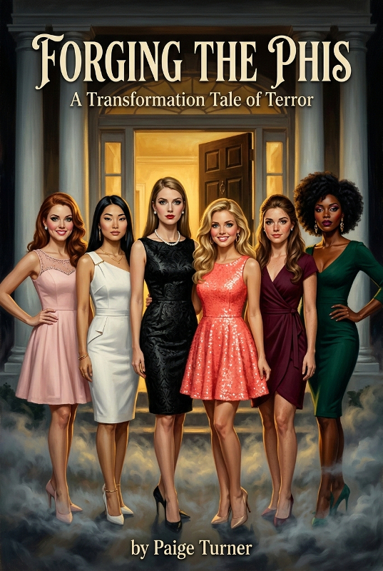

Welcome to Phi Kappa Delta.

When I last checked in, I was head down wrestling with Chapter Two of the new novel, fully confident we were going to reach an understanding. The update is that we did — and in the process Chapter Three decided it had notes. So the writing is still in progress, and yes, it's been over a month. But I made a deliberate choice to stop waiting for everything to be polished before sharing any of it, because if I've learned anything about how I write, it's that a little external pressure is good for me.
Which is my way of saying: Chapter One of Forging the Phis is live.
Here's the shape of it: six college boys wake up in captivity. A very calm, very wealthy man explains that they have been selected as research subjects. He is not lying, exactly. He just isn't telling them everything.
This one is dark. I've written dark before, true, but this is different than the psychological thriller of Yvonne or the moody doom of Hexed Lives. It's got a little of each of those, to be sure, but mixed with a dash of body horror, with a Donna Tartt/Gillian Flynn sensibility baked in from the start. It's also an ensemble story, which is something I've been wanting to try for a while. I'm genuinely proud of what this first chapter does, and I'm excited to see how it lands with you.
→ Read the Prologue and Chapter One
Consider this me lighting the fuse.1 The trick now is to stay ahead of it.
xoxo, Paige
1 I've always been a bit of a Phi-re starter. (sorry!)